第1章概述
1：TCP/IP通常被认为是一个四层协议系统，从上往下依次是应用层，运输层，网络层，链路层。
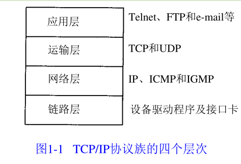
2：网桥是在链路层上对网络进行互连，而路由器则是在网络层上对网络进行互连。
3：网络层IP协议在首部中存入一个长度为8bit的数值，称作协议域。 1表示为ICMP协议，2表示为IGMP协议，6表示为TCP协议，17表示为UDP协议。
4：到1992年为止，知名端口号介于1～255之间。256～1023之间的端口号通常都是由Unix系统占用。比如FTP端口号21，Telent端口号23，TFTP端口号69，临时端口分配1024～5000之间的端口号。
5：知名端口号奇数的历史原因：NCP（网络控制协议，TCP前身）是单工的，不是全双工的，因此每个应用程序需要两个连接，需预留一对奇数和偶数端口号。
6：TCP/IP协议的应用程序通常采用两种应用编程接口（API）：socket和TLI（运输层接口：Transport Layer Interface）。
第3章IP：网际协议
1：IP数据报格式：
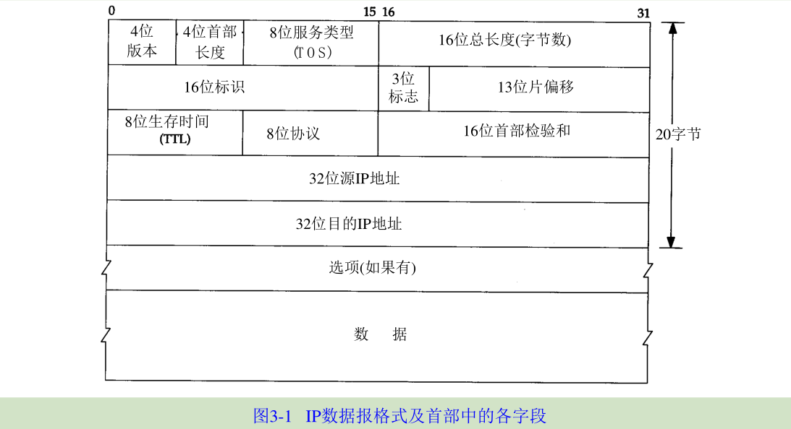
2：IP首部长度指的是首部以32bit（4字节）为单位的的数目。4bit能表示（0-15）最大数是15，首部最长为60个字节。普通IP数据报（没有任何选择项）字段的值是5。
3：IP数据报总长度以8bit（1字节）为长度，包含首部长度和数据长度。
4：IP首部始终是32bit（4字节）的整数倍。
5：IP首部网络字节序格式为big endian。
第4章ARP:地址解析协议
1：ARP为IP地址到对应的硬件地址之间提供动态映射。
2：ARP的分组格式：
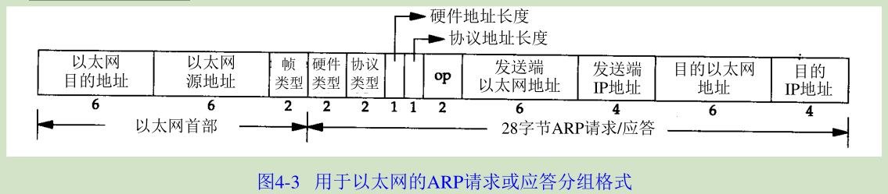
3：以太网目的地址为全1的特殊地址是广播地址，电缆上的所有以太网接口（网卡）都要接收广播的数据帧。
4：帧类型值为0x0806代表后面的数据是ARP请求或应答；硬件类型值为 1即表示以太网地址；协议类型值为0x0800即表示IP地址；硬件地址和协议地址的长度，以字节为单位，对于以太网上IP地址的ARP请求或应答来说，它们的值分别为6和4。
5：操作字段值为1表示ARP请求；2表示ARP应答；3表示RARP请求；4表示RARP应答。
6：免费ARP (gratuitous ARP)：主机发送ARP查找自己的I P地址，通常发生在系统引导期间进行接口配置的时候。作用：确定另一个主机是否设置了相同的IP地址；更新其他主机的ARP高速缓存相应IP地址的硬件地址。
第5章RARP：逆地址解析协议
1：RARP分组格式和ARP基本一致，帧类型是为0x8035。
2：RARP服务器的复杂性在于1：一般要为多个主机（网络上所有的无盘系统）提供硬件地址到IP地址的映射。由于内核一般不读取和分析磁盘文件，因此RARP服务器的功能就由用户进程来提供，且必须能够发送和接收帧类型字段值为0x8035的以太网数据帧。2：RARP请求是在硬件层上进行广播的，不经过路由器进行转发。为了让无盘系统在RARP服务器关机的状态下也能引导，通常在一个网络上（例如一根电缆）要提供多个RARP服务器。
第6章ICMP：Internet控制报文协议
1：ICMP报文数据格式：
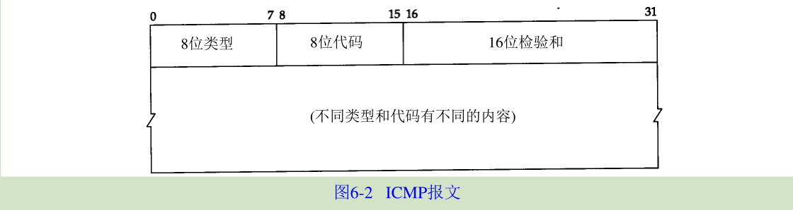
2：不同类型的ICMP报文由报文中的类型字段和代码字段来共同决定。
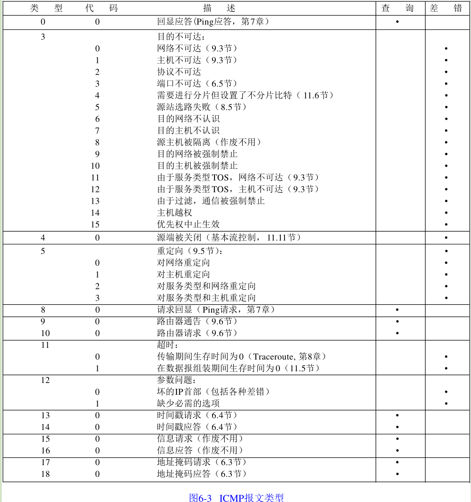
3：ICMP差错报文必须包括生成该差错报文的数据报IP首部（包含任何选项），还必须至少包括跟在该IP首部后面的前8个字节。因为IP首部包含了协议字段，使得ICMP可以知道如何解释后面的8个字节。
第7章Ping程序
1：Ping程序发送一份ICMP回显请求报文给主机，并等待返回ICMP回显应答。
2：Ping程序ICMP回显请求和回显应答报文格式：
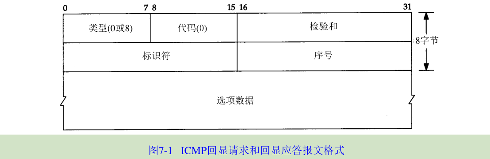
标识符字段置成发送进程的ID号，序号每次发送自增1。
3：Ping程序通过-R选项，以提供记录路由IP的功能。缺点1:并非所有路由都支持路由记录选项；2:单向选项；3:IP首部中只有有限的空间来存放IP地址（最多9个IP）。
4：IP数据报中的RR选项的一般格式：
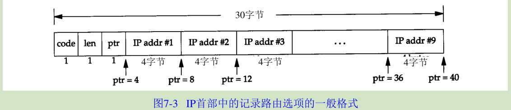
code值是7；len为总字节长度，即39；ptr指针字段，指向存放下一个IP地址的位置（最小是4，每存放一个IP后加4）
5：IP数据报中的时间戳选项格式：
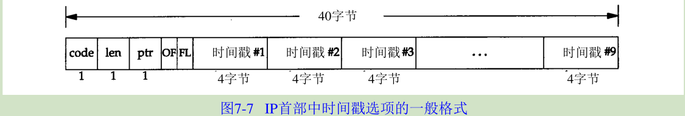
code值是0x44；len为总字节长度；ptr指向下一个可用空间的指针。OF表示溢出字段，FL表示标志字段。有如下3种标志：
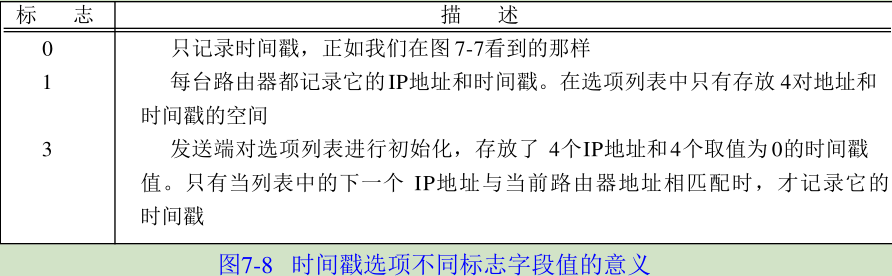
第8章Traceroute程序
1：Traceroute程序追踪IP数据报从一台主机传到另一台主机所经过的路由。
2：Traceroute程序使用ICMP报文和IP首部中的TTL字段（生存周期）。TTL字段初始设置一个8bit的值（推荐设置为64），每个处理数据报的路由器都需要把TTL的值减1或减去数据报在路由器中停留的秒数，因此TTL也可以看成是一个跳站计数器。
3：当路由器收到一份IP数据报，如果其TTL字段是0或1，则路由器不转发该数据报（非目的主机，丢弃数据，给源机发回”超时“信息的ICMP报文；目的主机直接处理数据，不会返回ICMP报文），这样可防止数据报在选路时无休止地在网络中流动。
4：Traceroute程序操作过程：1发送不可能的UDP端口号（大于30000）的UDP数据报给目的主机，TTL初始为1；2判断返回的ICMP数据报，如果是”超时“报文，则记录IP，同时TTL字段加1，继续发送；如果是”端口不可达”报文，则表示已经到达目的主机，结束发送UDP数据报。
5：Traceroute程序注意事项：1不能保证每次UDP数据的路由路径一致；2不能保证UDP数据报和返回的ICMP数据报路由路径一致；3返回的ICMP报文包含的IP是UDP数据到达路由器的IP，非路由器的发送IP（Ping的RR选项是发送地址）。
第9章IP选路
1：IP搜索路由表步骤：1搜索匹配的主机地址；2搜索匹配的网络地址；3搜索默认表项（默认表项一般在路由表中被指定为一个网络表项，其网络号为0）。
2：ICMP重定向差错一般用来让具有很少选路信息的主机逐渐建立更完善的路由表。当IP数据报应该被发送到另一个路由器R2时，收到数据报的路由器R1（发送端的默认路由）就要发送ICMP重定向差错报文给IP数据报的发送端，目的是完善发送端的路由表，以后可以把数据报直接发送给R2而不是通过R1跳转。
3：ICMP重定向报文的格式:
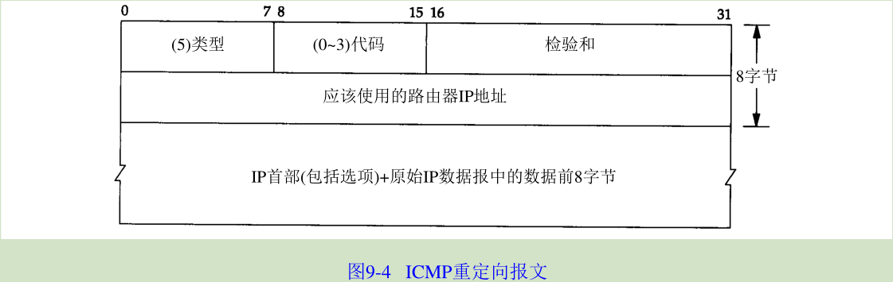
代码0网络重定向；1主机重定向；2服务类型和网络重定向；3服务类型和主机重定向。
4：ICMP重定向报文的接收者必须查看三个IP地址：1导致重定向的IP地址（即ICMP重定向报文的数据位于IP数据报的首部）；2发送重定向报文的路由器的IP地址（包含重定向信息的IP数据报中的源地址)；3应该采用的路由器I P地址（在ICMP报文中的4~7字节）。
5：ICMP重定向报文规则：1定向报文只能由路由器生成，而不能由主机生成；2重定向报文是为主机而不是为路由器使用的。
6：生成ICMP重定向报文条件：1出接口必须等于入接口；2用于向外传送数据报的路由不能被ICMP重定向报文创建或修改过，而且不能是路由器的默认路由；3数据报不能用源站选路来转发；4内核必须配置成可以发送重定向报文。
7：主机收到ICMP重定向报文后的检查：1新的路由器必须直接与网络相连接；2重定向报文必须来自当前到目的地所选择的路由器；3重定向报文不能让主机本身作为路由器；4被修改的路由必须是一个间接路由。
8：路由器应该发送的只是对主机的重定向（代码1或3)，而不是对网络的重定向。
9：初始化路由表的方法：1配置文件中指定静态路由，设置默认路由；2利用ICMP路由器通告和请求报文。
10：主机引导后要广播或多播传送一份路由器请求报文，一台或更多台路由器响应一份路由器通告报文；路由器定期地广播或多播传送它们的路由器通告报文，允许每个正在监听的主机相应地更新它们的路由表。
11：ICMP路由器请求报文格式：
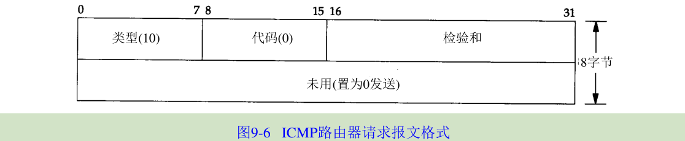
12：ICMP路由器通告报文格式：
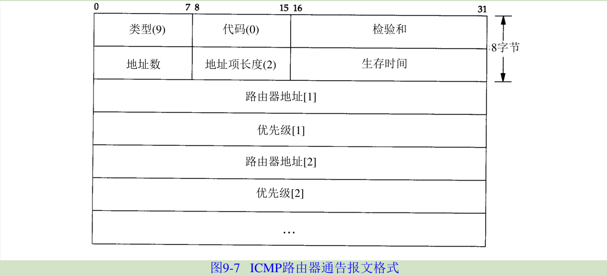
第10章动态选路协议
1：选路信息协议RI报文包含中在UDP数据报中。格式如下：
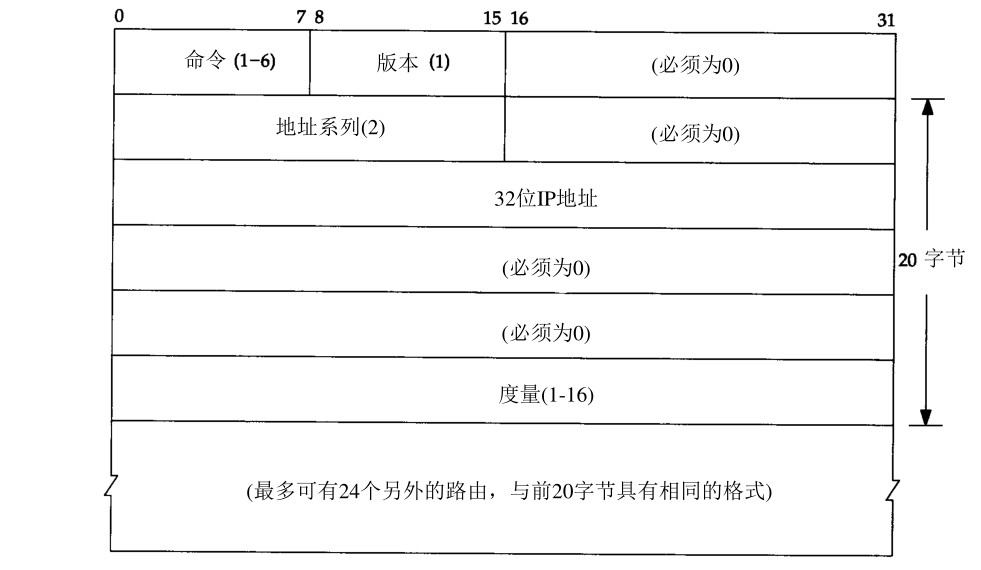
命令字段为1请求，2应答，3、4废弃不用，5轮询，6轮询表项；RIP度量是以跳计数的，跳数的最大值是15，度量为16表示到无路由到达该IP地址；采用这种20字节格式的RIP报文可以通告多达25条路由。
2：RIP常用的UDP端口号是520。